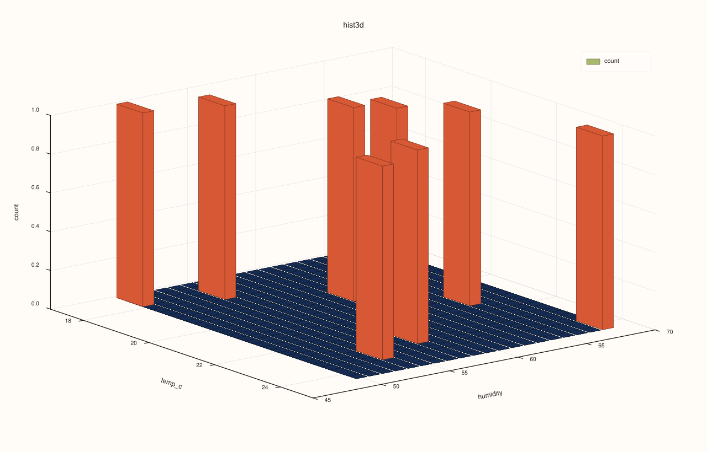
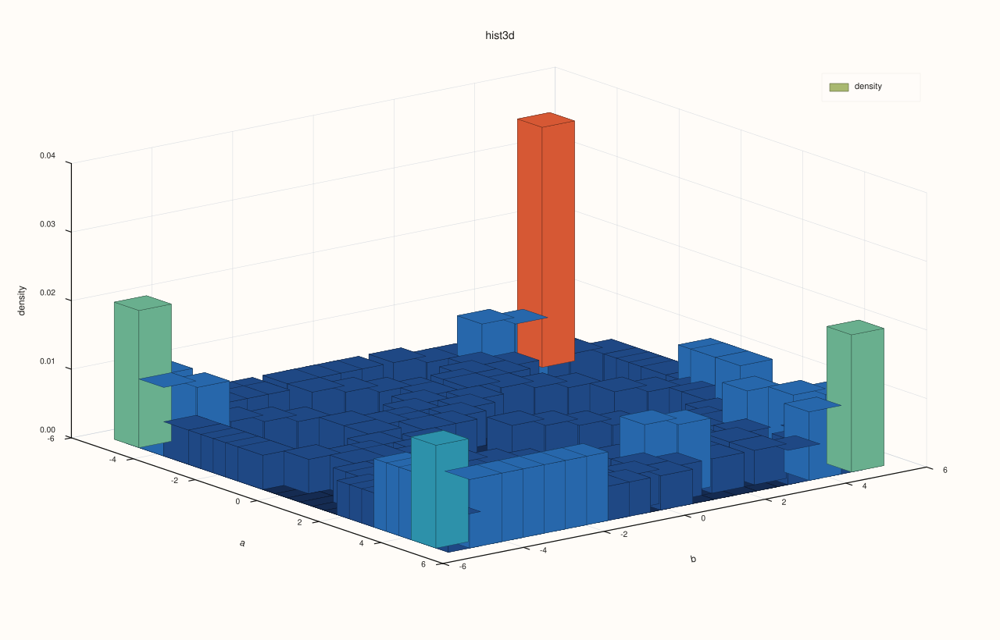

CatalogPlot3DAccessor::hist¶
Back to CatalogPlot3DAccessor API Reference
Signatures¶
CatalogPlot3DAccessor::hist(std::string_view x_key,
std::string_view y_key,
const pluss::table::Hist3DPlotOptions& options = {}) const -> pluss::pl::Studio
CatalogPlot3DAccessor::hist(std::string_view x_key,
std::string_view y_key,
const CatalogHist3DPlotOptions& options) const -> pluss::pl::Studio
What It Does¶
Builds a 2D-binned histogram over (x_key, y_key) and renders each bin’s count (or, with
normalize = true, density) as a 3D bar/surface/wireframe grid, depending on
Hist3DPlotOptions::as_surface/as_wireframe. Reuses the same all-keys-reconciled-together
alignment CatalogPlot3DAccessor::scatter uses, over just the two
requested keys.
Parameters¶
x_key, y_key (std::string_view, required)
The two keys binned into the 2D histogram grid.
options (pluss::table::Hist3DPlotOptions or CatalogHist3DPlotOptions)
```cpp
struct Hist3DPlotOptions {
std::int64_t bins_x{26};
std::int64_t bins_y{20};
bool normalize{false};
bool smooth{false};
std::int64_t smooth_passes{1};
bool as_surface{false};
bool as_wireframe{false};
Plot3DSceneOptions scene{};
Plot3DTraceOptions trace{};
XYAlignOptions align{XYAlignMode::Inner, XYAlignBy::Auto, 0.0};
};
struct CatalogHist3DPlotOptions {
pluss::table::XYAlignMode align{pluss::table::XYAlignMode::Inner};
pluss::table::XYAlignBy align_by{pluss::table::XYAlignBy::Auto};
double pad_scalar{0.0};
pluss::table::Hist3DPlotOptions hist{};
};
```
`bins_x`/`bins_y` set the grid resolution independently per axis. `normalize = true`
switches the z-axis (and its label) from `"count"` to `"density"`. `smooth`/
`smooth_passes` optionally blur the grid before rendering. `as_surface`/`as_wireframe`
change the grid's render style; both `false` (the default) renders it as 3D bars.
`align`/`align_by`/`pad_scalar` govern how `x_key`/`y_key` are reconciled — same
`XYAlignMode`/`XYAlignBy` trio [`scatter()`](scatter.md) uses, defaulting to
`Inner`.
Returns¶
pluss::pl::Studio
A figure with one 3D pane containing a single binned-grid trace, z-labeled "count" or
"density" depending on normalize.
Examples¶
Example 1. Default options: a 2D-binned count grid over temp_c/humidity.
using namespace pluss::kindle::literals;
auto measurements = pluss::kindle::Catalog({
"temp_c"_k = pluss::kindle::Stream(pluss::make_series({18.0, 19.5, 21.0, 20.0, 22.5, 23.0, 17.5, 24.0})),
"humidity"_k = pluss::kindle::Stream(pluss::make_series({55.0, 60.0, 65.0, 62.0, 58.0, 54.0, 50.0, 68.0})),
});
auto chart = measurements.plot3d().hist("temp_c", "humidity");
chart.show();

Example 2. CatalogHist3DPlotOptions with normalize = true and a coarser grid.
using namespace pluss::kindle::literals;
auto measurements = pluss::kindle::Catalog({
"temp_c"_k = pluss::kindle::Stream(pluss::make_series({18.0, 19.5, 21.0, 20.0, 22.5, 23.0, 17.5, 24.0})),
"humidity"_k = pluss::kindle::Stream(pluss::make_series({55.0, 60.0, 65.0, 62.0, 58.0, 54.0, 50.0, 68.0})),
});
pluss::kindle::CatalogHist3DPlotOptions options;
options.hist.normalize = true;
options.hist.bins_x = 10;
options.hist.bins_y = 8;
auto chart = measurements.plot3d().hist("temp_c", "humidity", options);
chart.show();
The z-axis is now "density" instead of "count", over a coarser 10 × 8 grid.

Example 3. An unknown key throws.
using namespace pluss::kindle::literals;
auto measurements = pluss::kindle::Catalog({
"temp_c"_k = pluss::kindle::Stream(pluss::make_series({18.0, 19.5, 21.0})),
"humidity"_k = pluss::kindle::Stream(pluss::make_series({55.0, 60.0, 65.0})),
});
try {
auto bad = measurements.plot3d().hist("nope", "humidity");
} catch (const std::exception& e) {
std::cout << e.what();
}
Output¶
Catalog::plot3d().hist: unknown x key 'nope'
Notes¶
normalizechanges both the computed values and the z-axis label ("count"vs."density").as_surface/as_wireframechange render style but not the underlying binning.Uses the same all-keys-reconciled-together alignment as
CatalogPlot3DAccessor::scatter, overx_key/y_keyonly.Returns a
pluss::pl::Studio— seeCatalogPlotAccessor::line’s important callout for how to view or save the result.
See Also¶
CatalogPlotAccessor::hist: the 1D per-key histogram this method generalizes to a 2D grid.CatalogPlot3DAccessor::surface/wireframe: a different kind of aggregated grid, built from an explicitGroupOpover az_keyrather than a binned count.